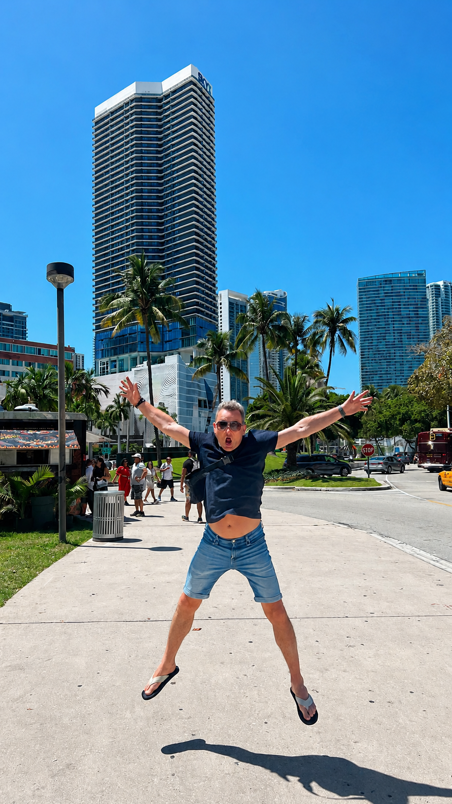

Za co Ci dziękujemy?
Za obecność, za cierpliwość, za poczucie bezpieczeństwa i za to, że potrafisz być obok wtedy, gdy tylko cię potrzeba.
Dzień Ojca
Dziś twoje święto! Więc nie zapomnij pozostawiać uśmiechniętym i cieszyć się każdą chwilą.
🢃 Życzenia! 🢃
Z okazji Dnia Ojca życzymy Ci dużo zdrowia, spokoju, uśmiechu i dni pełnych takich chwil, które chce się zapamiętuje na długo. Dziękujemy Ci za wszystko: za wsparcie, dobre rady, cierpliwość, żarty, wspólne naprawianie wszystkich rzeczy (najpierw psucie) i za to, że zawsze możemy na Ciebie liczyć.
Życzymy Ci, żebyś miał jak najwięcej powodów do radości, planów do spełniania, nowych miejsc do zwiedzania i jak najszybszego domu wybudowania! 😁😁😁
Kochamy Cię!
Mały Kubuś i jeszcze mniejsza Zuzia
Za obecność, za cierpliwość, za poczucie bezpieczeństwa i za to, że potrafisz być obok wtedy, gdy tylko cię potrzeba.
Zdrowia, odpoczynku, spełnionych marzeń, świetnych podróży i codziennej dawki śmiechu.
Jesteś dla nas wszystkich suuper ważny. Nie tylko dzisiaj, ale każdego dnia!!!